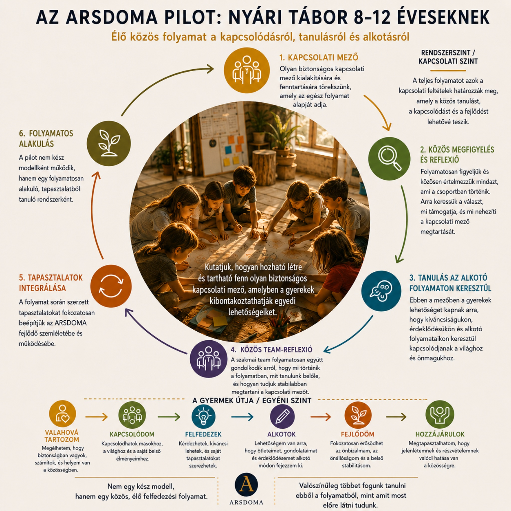

Mi történik, ha nem a program, hanem a gyerek kerül a középpontba?
Az ARSDOMA olyan közegek létrehozásán dolgozik, ahol a gyerekek biztonságban kapcsolódhatnak, felfedezhetik saját erősségeiket, és megtapasztalhatják a tanulás, az alkotás és a közös jelenlét örömét.
Első gyakorlati pilotunk 2026 nyarán indul: egy kislétszámú nyári táborral 8–12 éves gyerekeknek.
Kapcsolódásból, alkotásból és figyelemből épülő fejlődési tér.
Az ARSDOMA abból indul ki, hogy a gyerekek akkor tudnak igazán tanulni, alkotni és önmagukhoz kapcsolódni, ha nem kell közben védekezniük, túlalkalmazkodniuk vagy szerepet játszaniuk. A cél nem az, hogy megmondjuk, mivé kell válniuk, hanem hogy olyan teret hozzunk létre, ahol láthatóbbá válhat, mi érdekli őket, miben erősek, és hogyan tudnak kapcsolódni önmagukhoz, másokhoz és a világhoz.
Kapcsolódás
A gyerek akkor tud megnyílni a világ felé, ha közben megtapasztalja, hogy nem marad egyedül az érzéseivel, kérdéseivel és próbálkozásaival.
Alkotás
Az alkotás nem díszítőelem vagy jutalom, hanem természetes út ahhoz, hogy a gyerek kifejezze, rendezze és továbbformálja a tapasztalatait.
Kibontakozás
A fejlődés nem egyforma tempóban és nem egyetlen úton történik. A fontos az, hogy legyen tér, ahol a gyerek saját erősségei és belső iránya megjelenhetnek.
Az első gyakorlati lépés.
Az ARSDOMA pilotja egy élő, figyelmes indulás. A célunk az, hogy valós gyerekcsoportban, szakmai teammunkával és folyamatos közös gondolkodással formáljuk tovább azt a kapcsolati–alkotói közeget, amely az ARSDOMA alapját adja.
A nyári tábor az első konkrét tér, ahol ez a szemlélet gyerekekkel, szülőkkel és szakemberekkel együtt elkezdhet működésbe lépni.
A közös tér és a gyermek útja egyszerre.
Az infografika azt mutatja meg, hogy az ARSDOMA-ban egyszerre figyelünk a közös térre és az egyes gyerekre. A kapcsolódás, az alkotás, a teammunka és a tapasztalatok beépítése nem külön részek, hanem ugyanannak az élő folyamatnak az elemei.

ARSDOMA pilot · kapcsolódás · alkotás · közös figyelem · gyermeki kibontakozás
Tábor, ahol nem a sablonokat követjük, hanem teret adunk.
Az ARSDOMA első gyakorlati pilotja egy kislétszámú nyári táborral indul 8–12 éves gyerekeknek. Olyan figyelmes, kapcsolódásra és alkotásra épülő közeget hozunk létre, ahol a gyerekek saját érdeklődése, kreativitása és erősségei kerülhetnek előtérbe.
Konkrét információk
- Lehetséges helyszínek:
Breznó vagy Budapest, Gellérthegy, Somlói út 50., 1118 - Részvételi díj:
75 000 Ft - Idősávok:
az érdeklődési / jelentkezési űrlapon választhatók - Jelentkezés:
az űrlap kitöltésével lehet érdeklődni és időpontot egyeztetni
A pontos helyszín és időpont a jelentkezések, az elérhető idősávok és a csoport összetétele alapján véglegesül.
Kiknek szól?
- 8–12 éves gyerekeknek
- akik szeretnek építeni, kísérletezni, történetet alkotni, mozogni vagy közösen gondolkodni
- akiknek fontos lehet egy nyugodtabb, figyelmesebb, kislétszámú közeg
- akik szívesen kapcsolódnak más gyerekekhez, de ehhez időre és biztonságos térre van szükségük
Mit szeretnénk adni?
Figyelmes felnőttkísérést, sikerélményt az alkotásban, örömteli tanulási és kísérletezési helyzeteket, kapcsolódást, közös játékot és együtt gondolkodást. A cél az, hogy a gyerekek ne egy előre gyártott programhoz alkalmazkodjanak, hanem olyan térbe érkezzenek, ahol láthatóbbá válhat, mi mozgatja őket belülről.
Mit jelent ez a gyakorlatban?
A tábor nem hagyományos értelemben vett programcsomag. Nem az a célunk, hogy minden percet előre kitöltsünk, hanem hogy olyan keretet tartsunk, amelyben a gyerekek kíváncsisága, kapcsolódása és alkotókedve természetesebben megjelenhet.
Nem teljesítményt várunk
A gyerekeknek nem kell bizonyítaniuk. A hangsúly azon van, hogy biztonságosabb legyen próbálkozni, hibázni, újrakezdeni és saját módon kapcsolódni.
Nem előre gyártott élményt adunk
A tevékenységek irányt adnak, de a folyamatot a gyerekek érdeklődése és a csoport alakulása is formálja.
Szakmai teammunka kíséri
A felnőttek nem egyedül „viszik” a tábort: folyamatos közös szakmai egyeztetés és reflektív teammunka segíti a gyerekekhez való figyelmes kapcsolódást.
Részletes szülői tájékoztató
A részletesebb tájékoztatóban bemutatjuk a tábor szemléletét, a gyerekekkel való munka alapelveit, a kapcsolódás és alkotás szerepét, valamint a jelentkezéshez kapcsolódó gyakorlati tudnivalókat.
Szakmai háttér a tábor mögött.
Az ARSDOMA nem kész programként, hanem alakuló szakmai és kapcsolati térként indul. A tábor mögött pszichológiai, pedagógiai és alkotói gondolkodás, valamint folyamatos szakmai reflexió áll.
Bódis András
Klinikai szakpszichológus, az ARSDOMA alapítója. Több mint tíz év pszichiátriai és pszichoterápiás szakmai tapasztalatra építve dolgozik azon, hogyan lehet a tanulást, az alkotást és a kapcsolódást a gyerekek mentális egészségének és önazonos fejlődésének szolgálatába állítani.
Dr. Domonkos Katalin
Az ARSDOMA társalapítója. Szakmai és alkotói jelenléte az ARSDOMA közös gondolkodásának, kapcsolati szemléletének és gyakorlati formálódásának meghatározó része.
Kapcsolódj az ARSDOMA alakulásához.
Az ARSDOMA Blog az önálló gondolkodási és kapcsolódási terünk. Írunk gyerekekről, szülőségről, kapcsolódásról, tanulásról, alkotásról, erősségekről és arról, hogyan formálódik az ARSDOMA a gyakorlatban.
Nemcsak tájékoztatni szeretnénk, hanem közösséget építeni.
A blogon keresztül követhetővé válik az ARSDOMA útja, és lehetőség nyílik arra is, hogy szülők, pedagógusok és érdeklődők kapcsolódjanak a közös gondolkodáshoz.
Érdekel a tábor vagy az ARSDOMA?
Írj nekünk, vagy használd a jelentkezési / érdeklődési űrlapot. A részleteket személyes kapcsolódásban pontosítjuk.